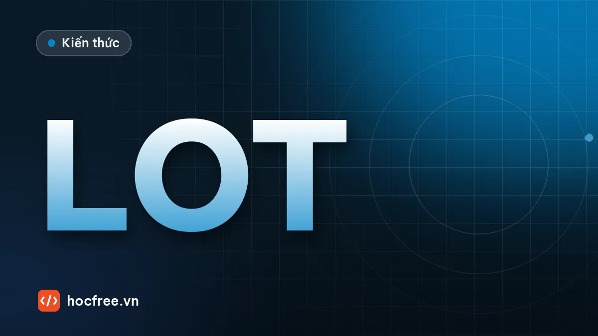

OCR và OCV trong công nghiệp: đọc số lô, hạn dùng, số seri
Phân biệt đọc và xác minh ký tự, các loại chữ in khắc trong nhà máy, các cặp ký tự hay nhầm và cách sửa theo định dạng mã lô.

Học xong bài này, bạn sẽ
- Phân biệt đọc (OCR) và xác minh (OCV)
- Hiểu các loại chữ in, khắc trong nhà máy
- Biết các bẫy nhầm ký tự
Nên học trước: Đọc mã QR và DataMatrix
Nội dung bài viết
Bài đọc mã QR và DataMatrix cho thấy mã 2D dễ đọc tin cậy nhờ mẫu định vị và mã sửa lỗi. Chữ in thì không có những thứ đó: không có mẫu định vị, không có Reed-Solomon, một vết mực nhỏ đủ biến "8" thành "B". Vậy mà nhà máy vẫn phải đọc chữ: hạn dùng in phun trên lon, số lô trên bao bì, số seri khắc laser trên linh kiện, vì luật ghi nhãn yêu cầu người đọc được, hoặc vì khách hàng chưa in mã 2D. Bài này là nền tảng khái niệm cho phần OCR của chặng: phân biệt đọc (OCR) và xác minh (OCV), nhận diện các loại chữ in, khắc trong nhà máy, và các bẫy nhầm ký tự cùng cách chặn chúng bằng định dạng. Bài sau, OCR với Tesseract và tiền xử lý, đi vào công cụ cụ thể.
1. OCR và OCV: hai câu hỏi khác nhau
OCR (Optical Character Recognition, nhận dạng ký tự quang học) trả lời câu hỏi "chữ này là gì?": hệ thống không biết trước nội dung và phải đọc ra chuỗi. OCV (Optical Character Verification, xác minh ký tự quang học) trả lời "chữ in ra có đúng là chuỗi mong đợi và đủ chất lượng không?": hệ thống biết trước nội dung (từ lệnh sản xuất, từ máy in, hoặc từ mã 2D bên cạnh) và chỉ kiểm tra.
| OCR (đọc) | OCV (xác minh) | |
|---|---|---|
| Đầu vào thêm | Không có, hoặc chỉ biết định dạng | Chuỗi mong đợi |
| Đầu ra | Chuỗi đọc được + độ tin cậy | OK/NG cho từng ký tự + điểm chất lượng |
| Ví dụ | Đọc số seri linh kiện để lưu vào MES; đọc số lô trên bao bì nhà cung cấp | Kiểm tra hạn dùng in phun trên lon khớp lệnh sản xuất; kiểm tra chữ in không bị mất nét |
| Lỗi nguy hiểm nhất | Đọc sai mà tự tin (lưu seri sai vào hệ thống) | Cho qua chữ in sai hoặc in kém (escape) |
| Độ khó | Cao: phải phân biệt cả 36 ký tự hoặc hơn ở mọi vị trí | Thấp hơn: mỗi vị trí chỉ so với một ký tự mong đợi |
OCV dễ đạt độ tin cậy cao hơn vì có đáp án. Nhưng OCV còn làm được việc OCR không làm: chấm chất lượng in. Một chữ "8" bị mất nửa nét dưới vẫn có thể được OCR đọc đúng là "8", nhưng người tiêu dùng có thể đọc thành "9"; OCV so với mẫu và báo NG. Nhiều trạm thực tế làm cả hai: OCR để đọc, rồi OCV để xác nhận chuỗi đọc được khớp lệnh và chữ in đạt chất lượng.
2. Quy trình của một trạm OCR/OCV
- Định vị vùng chữ: theo một mốc cố định (logo, cạnh nhãn, mã 2D) bằng template matching như bài template matching, hoặc bằng mô hình phát hiện chữ. Định vị theo mốc ổn định hơn tìm chữ trực tiếp.
- Chuẩn hóa: xoay thẳng dòng chữ, cắt ROI, đưa về chữ tối trên nền sáng (hoặc ngược lại, nhất quán), chiều cao chữ cố định.
- Tách ký tự (phương pháp cổ điển: chiếu histogram theo cột, thành phần liên thông) hoặc đọc cả dòng (Deep Learning, bài OCR bằng Deep Learning).
- Nhận dạng từng ký tự (so mẫu, phân loại) hoặc cả chuỗi, kèm điểm tin cậy.
- Kiểm tra hợp lệ: định dạng (vị trí nào là chữ, vị trí nào là số), giá trị hợp lý (tháng 01–12), chữ số kiểm tra, khớp lệnh sản xuất.
- Quyết định: OK, NG, hoặc "không đọc được" (NOREAD), và lưu ảnh.
Bước 5 thường bị xem nhẹ nhưng lại là bước tạo ra độ tin cậy. Mục 5 sẽ cho thấy nó sửa và chặn lỗi thế nào.
3. Các loại chữ trong nhà máy
| Loại | Đặc điểm | Thách thức | Gợi ý chiếu sáng, xử lý |
|---|---|---|---|
| In phun liên tục (CIJ) dạng chấm | Ký tự ghép từ ma trận chấm (ví dụ 5×7, 7×9), hạn dùng trên lon, chai, túi | Chấm rời nhau, khoảng cách chấm thay đổi theo tốc độ băng tải, mực lem trên bề mặt cong | Đèn khuếch tán; nối chấm bằng phép đóng (closing) trước khi tách ký tự |
| In phun nhiệt (TIJ), in nhiệt (TTO) trên nhãn, màng | Nét liền, độ phân giải cao | Màng bóng phản xạ, nhãn nhăn, ruy băng mòn làm mất nét | Đèn khuếch tán hoặc vòm, nghiêng camera tránh phản xạ gương |
| Khắc laser trên bao bì, nhãn | Đốt bỏ lớp mực tạo chữ sáng trên nền màu | Tương phản phụ thuộc màu nền, chữ âm bản (sáng trên tối) | Chọn màu đèn tăng tương phản; đảo ảnh cho thống nhất |
| Khắc laser, khắc chấm (dot peen) trên kim loại | Chữ cùng vật liệu với nền, phản xạ thay đổi theo góc | Tương phản thấp, vân gia công, bề mặt cong | Đèn góc thấp (dark field) cho chữ lõm; đèn đồng trục cho bề mặt phẳng bóng |
| Dập nổi, đúc (lốp xe, vỏ nhựa, chi tiết đúc) | Chữ cùng màu với nền, chỉ thấy qua bóng đổ | Phụ thuộc mạnh vào hướng sáng | Đèn có hướng góc thấp; ghép nhiều ảnh chiếu từ các hướng (photometric stereo) cho trường hợp khó |
Chữ in phun dạng chấm là loại hay gặp nhất ở Việt Nam (hạn dùng thực phẩm, đồ uống) và cũng là loại làm hỏng các bước tách ký tự cổ điển, vì mỗi ký tự là hàng chục thành phần rời. Thí nghiệm: mô phỏng chữ in chấm rồi đếm thành phần liên thông trước và sau phép đóng.
import cv2
import numpy as np
# Mô phỏng in phun chấm: vẽ chữ nét liền rồi chỉ giữ chấm tại các nút lưới bước 5 px
chu = np.zeros((60, 260), np.uint8)
cv2.putText(chu, "26/10/27", (8, 48), cv2.FONT_HERSHEY_SIMPLEX, 1.5, 255, 5, cv2.LINE_AA)
cham = np.zeros_like(chu)
for y in range(0, 60, 5):
for x in range(0, 260, 5):
if chu[y, x] > 128:
cv2.circle(cham, (x, y), 2, 255, -1) # mỗi chấm mực đường kính 5 px, cách nhau 5 px tâm-tâm
cham[:, ::10] = 0 # băng tải nhanh hơn: chấm theo chiều ngang thưa ra
so_tp = cv2.connectedComponents(cham)[0] - 1
dong = cv2.morphologyEx(cham, cv2.MORPH_CLOSE, cv2.getStructuringElement(cv2.MORPH_ELLIPSE, (5, 5)))
so_tp_dong = cv2.connectedComponents(dong)[0] - 1
print("số ký tự thật : 8")
print("thành phần liên thông (chấm):", so_tp)
print("sau closing 5×5 :", so_tp_dong)
cv2.imwrite("in_cham.png", np.hstack([cham, dong]))số ký tự thật : 8
thành phần liên thông (chấm): 94
sau closing 5×5 : 8Trước phép đóng, một chuỗi 8 ký tự vỡ thành rất nhiều mảnh, không thể tách ký tự theo thành phần liên thông. Sau closing với phần tử 5×5 (cỡ khoảng cách chấm), số thành phần về đúng 8: mỗi ký tự thành một khối. Kích thước phần tử phải theo khoảng cách chấm: quá nhỏ thì chưa nối, quá lớn thì các ký tự sát nhau dính vào nhau. Vì khoảng cách chấm đổi theo tốc độ băng tải, trạm cần kiểm tra lại khi dây chuyền đổi tốc độ.
4. Bẫy nhầm ký tự
Các cặp ký tự hay nhầm phụ thuộc font, nhưng một số cặp gần như font nào cũng nguy hiểm. Đo trực tiếp: vẽ 36 ký tự (0–9, A–Z) bằng font Hershey của OpenCV, tính tương quan chuẩn hóa (NCC) giữa từng cặp, cho phép lệch ±3 px, rồi in các cặp giống nhau nhất.
import itertools
import string
import cv2
import numpy as np
KY_TU = string.digits + string.ascii_uppercase
def ve_ky_tu(c):
o = np.zeros((44, 32), np.uint8)
(w, h), _ = cv2.getTextSize(c, cv2.FONT_HERSHEY_SIMPLEX, 1.0, 2)
cv2.putText(o, c, ((32 - w) // 2, (44 + h) // 2), cv2.FONT_HERSHEY_SIMPLEX, 1.0, 255, 2, cv2.LINE_AA)
return o
def giong_nhau(a, b):
"""NCC lớn nhất khi cho b trượt ±3 px trên a."""
a = cv2.copyMakeBorder(a, 3, 3, 3, 3, cv2.BORDER_CONSTANT, value=0)
return float(cv2.matchTemplate(a, b, cv2.TM_CCOEFF_NORMED).max())
MAU = {c: ve_ky_tu(c) for c in KY_TU}
cap = sorted(((giong_nhau(MAU[a], MAU[b]), a, b) for a, b in itertools.combinations(KY_TU, 2)), reverse=True)
print("12 cặp giống nhau nhất (trên 630 cặp):")
print(" " + " ".join(f"{a}/{b} {s:.2f}" for s, a, b in cap[:12]))
for a, b in (("1", "I"), ("5", "S"), ("2", "Z"), ("6", "G"), ("1", "7")):
print(f" cặp {a}/{b}: {giong_nhau(MAU[a], MAU[b]):.2f}", end="")
print()
print(f"trung vị NCC của mọi cặp: {np.median([s for s, _, _ in cap]):.2f}")12 cặp giống nhau nhất (trên 630 cặp):
O/Q 0.97 D/O 0.95 G/O 0.93 8/B 0.92 C/O 0.91 D/Q 0.91 0/O 0.90 G/Q 0.90 F/P 0.90 P/R 0.90 8/S 0.90 C/G 0.90
cặp 1/I: 0.74 cặp 5/S: 0.88 cặp 2/Z: 0.84 cặp 6/G: 0.69 cặp 1/7: 0.63
trung vị NCC của mọi cặp: 0.58Với font này, các ký tự tròn (O, Q, D, G, C, 0) giống nhau trên 0,9; 8/B, P/R, F/P cũng vậy. Nhiễu, mực lem hoặc mất nét nhỏ là đủ đảo thứ hạng. Một số cặp như 1/I (0,74) hay 2/Z (0,84) ít giống hơn trong font này (trung vị mọi cặp là 0,58) nhưng rất giống trong font khác (font đơn giản của máy in phun 5×7 vẽ "1" và "I" chỉ khác một chấm). Bảng tổng hợp từ kinh nghiệm thực tế:
| Nhóm | Cặp hay nhầm | Nguyên nhân thường gặp |
|---|---|---|
| Tròn | 0 / O / D / Q, C / G, 6 / G | Mất nét nhỏ (đuôi Q, ngang G), font co hẹp |
| Thẳng | 1 / I / l / 7 / T, ký tự "|" | Font không chân, chấm in thiếu |
| Có eo | 8 / B / 3, 5 / S, 2 / Z, 4 / A | Cạnh trái của B bị mờ, nét cong bị vuông hóa trong font chấm |
| Ghép | rn / m, vv / w, cl / d | Khoảng cách ký tự quá hẹp |
| Hướng | 6 / 9, M / W, N / Z khi chữ bị xoay 180° hoặc 90° | Sản phẩm đặt ngược, không kiểm tra hướng |
| Ký tự rác | Dấu chấm, gạch thừa từ bụi, vết xước | Không giới hạn tập ký tự, ROI rộng |
Nhiều chuẩn mã hóa né sẵn các bẫy này. Ví dụ số khung xe (VIN, ISO 3779) không dùng các chữ I, O, Q; nhiều hãng thiết kế số seri chỉ dùng chữ số hoặc bỏ các chữ dễ nhầm. Nếu bạn được tham gia thiết kế mã, đây là cách rẻ nhất để tăng độ tin cậy.
5. Sửa nhầm theo định dạng mã lô
Ý tưởng: nếu biết vị trí nào chỉ có thể là chữ số, vị trí nào chỉ có thể là chữ cái, thì một chữ "O" đọc được ở vị trí chữ số gần như chắc chắn là số "0". Ta mô tả định dạng bằng một mặt nạ: 9 = chữ số, A = chữ cái, ký tự khác = ký tự cố định. Ví dụ mã lô của một nhà máy đồ uống: L + năm 2 số + tháng 2 số + mã dây chuyền 1 chữ + ca 2 số, như L2610A07, mặt nạ L9999A99.
import re
SANG_SO = {"O": "0", "D": "0", "Q": "0", "I": "1", "L": "1", "T": "7", "Z": "2", "S": "5", "B": "8", "G": "6"}
SANG_CHU = {"0": "O", "1": "I", "2": "Z", "5": "S", "8": "B", "6": "G", "4": "A"}
NHOM_NHAM = ("0ODQ", "1IL7T", "2Z", "5S", "8B3", "6G", "4A") # các nhóm hay nhầm với nhau
def cung_nhom(a, b):
return a == b or any(a in n and b in n for n in NHOM_NHAM)
def sua_theo_mat_na(chuoi, mat_na):
"""Trả (chuỗi đã sửa, danh sách sửa) hoặc (None, lý do). 9 = chữ số, A = chữ cái, khác = cố định."""
chuoi = chuoi.strip().upper().replace(" ", "")
if len(chuoi) != len(mat_na):
return None, f"sai độ dài: {len(chuoi)} thay vì {len(mat_na)}"
ket_qua, da_sua = [], []
for i, (c, m) in enumerate(zip(chuoi, mat_na)):
if m == "9":
moi = c if c.isdigit() else SANG_SO.get(c)
elif m == "A":
moi = c if c.isalpha() else SANG_CHU.get(c)
else:
moi = m if cung_nhom(c, m) else None # ký tự cố định
if moi is None:
return None, f"vị trí {i}: '{c}' không thể là {'chữ số' if m == '9' else 'chữ cái' if m == 'A' else repr(m)}"
if moi != c:
da_sua.append(f"{i}:{c}→{moi}")
ket_qua.append(moi)
return "".join(ket_qua), da_sua
MAU_LO = re.compile(r"^L(\d{2})(0[1-9]|1[0-2])([ABC])(0[1-9]|1[0-9]|2[0-1])$") # tháng 01–12, line A–C, ca 01–21
def kiem_tra_lo(chuoi_ocr, lo_mong_doi):
sua, ghi_chu = sua_theo_mat_na(chuoi_ocr, "L9999A99")
if sua is None:
return "NOREAD", ghi_chu
if not MAU_LO.match(sua):
return "NOREAD", f"{sua}: giá trị không hợp lệ (tháng, dây chuyền hoặc ca)"
if sua != lo_mong_doi:
return "NG", f"{sua} khác lô mong đợi {lo_mong_doi} (sửa: {ghi_chu})"
return "OK", f"{sua} (sửa: {ghi_chu if ghi_chu else 'không'})"
for ocr in ("L2610A07", "L261OA07", "12610AO7", "L26I0A0T", "L2618A07", "L2610807", "L2610A0", "L2610A01"):
print(f"{ocr:9s} → {kiem_tra_lo(ocr, 'L2610A07')}")L2610A07 → ('OK', 'L2610A07 (sửa: không)')
L261OA07 → ('OK', "L2610A07 (sửa: ['4:O→0'])")
12610AO7 → ('OK', "L2610A07 (sửa: ['0:1→L', '6:O→0'])")
L26I0A0T → ('OK', "L2610A07 (sửa: ['3:I→1', '7:T→7'])")
L2618A07 → ('NOREAD', 'L2618A07: giá trị không hợp lệ (tháng, dây chuyền hoặc ca)')
L2610807 → ('NG', "L2610B07 khác lô mong đợi L2610A07 (sửa: ['5:8→B'])")
L2610A0 → ('NOREAD', 'sai độ dài: 7 thay vì 8')
L2610A01 → ('NG', 'L2610A01 khác lô mong đợi L2610A07 (sửa: [])')Đọc kết quả như một kỹ sư:
- "O" ở vị trí tháng, "1" ở vị trí chữ L cố định (cùng nhóm nhầm 1/I/L), "I" và "T" ở vị trí chữ số đều được sửa đúng. Ghi lại danh sách sửa: nếu một vị trí bị sửa liên tục, chữ in ở đó có vấn đề (đầu in tắc một vòi).
L2618A07: tháng 18 không tồn tại, nên dù đúng mặt nạ vẫn bị chặn thành NOREAD (có thể là "0" đọc thành "8"). Đây là sức mạnh của kiểm tra giá trị, không chỉ kiểm tra loại ký tự.L2610807: "8" ở vị trí dây chuyền được sửa thành "B", hợp lệ về định dạng (dây chuyền B tồn tại) nhưng khác lô mong đợi, nên NG. Nếu trạm chỉ OCR mà không có lô mong đợi, chuỗiL2610B07sai sẽ được ghi vào hệ thống. Sửa theo định dạng có thể biến một lỗi đọc thành một chuỗi hợp lệ nhưng sai; vì vậy cần thêm lớp chặn: chữ số kiểm tra, so với lệnh sản xuất (OCV), hoặc yêu cầu độ tin cậy cao cho các vị trí đã bị sửa.L2610A01đọc đúng mặt nạ và giá trị nhưng khác lô: đây là lỗi in thật (máy in còn dữ liệu ca 01), phải NG chứ không phải NOREAD. Phân biệt hai loại này giúp bộ phận sản xuất biết lỗi ở máy in hay ở camera.
6. Đo đúng chỉ số
"OCR đúng 98%" là một câu vô nghĩa nếu không nói 98% của cái gì. Nhà máy cần tỉ lệ chuỗi đúng hoàn toàn, và quan trọng hơn, tách riêng hai kiểu thất bại:
- NOREAD (không đọc được): hệ thống tự biết mình không chắc, sản phẩm bị đẩy ra để người kiểm tra. Tốn công nhưng an toàn.
- Đọc sai (misread): hệ thống trả về chuỗi sai mà tự tin là đúng. Đây là escape, sai dữ liệu truy xuất, có thể dẫn tới thu hồi sản phẩm. Mục tiêu gần như bằng 0.
p_ky_tu = 0.995 # xác suất đọc đúng MỘT ký tự
for n in (8, 12, 20):
print(f"chuỗi {n:2d} ký tự: tỉ lệ chuỗi đúng ≈ {p_ky_tu ** n:.1%} (nếu lỗi các ký tự độc lập)")
# Kết quả một ca chạy thử: (đáp án, chuỗi hệ thống trả về; None = NOREAD)
ket_qua = [("L2610A07", "L2610A07")] * 960 + [("L2610A07", None)] * 31 + \
[("L2610A07", "L2610B07")] * 2 + [("L2610A07", "L2610A01")] * 7
dung = sum(1 for d, r in ket_qua if r == d)
noread = sum(1 for d, r in ket_qua if r is None)
sai = len(ket_qua) - dung - noread
print(f"\n{len(ket_qua)} mẫu: đúng {dung / len(ket_qua):.1%}, NOREAD {noread / len(ket_qua):.1%}, "
f"đọc sai {sai / len(ket_qua):.1%} ({sai} mẫu)")chuỗi 8 ký tự: tỉ lệ chuỗi đúng ≈ 96.1% (nếu lỗi các ký tự độc lập)
chuỗi 12 ký tự: tỉ lệ chuỗi đúng ≈ 94.2% (nếu lỗi các ký tự độc lập)
chuỗi 20 ký tự: tỉ lệ chuỗi đúng ≈ 90.5% (nếu lỗi các ký tự độc lập)
1000 mẫu: đúng 96.0%, NOREAD 3.1%, đọc sai 0.9% (9 mẫu)Độ chính xác ký tự 99,5% nghe rất cao, nhưng với chuỗi 20 ký tự chỉ còn khoảng 90% chuỗi đúng. Ở ca chạy thử, 0,9% đọc sai gồm 2 mẫu đọc nhầm A thành B (lỗi của trạm, phải điều tra) và 7 mẫu thực ra in sai ca (lỗi máy in, trạm làm đúng khi báo NG). Khi đánh giá, phải xem ảnh từng ca đọc sai để phân loại; trộn chung là che mất vấn đề. Bộ ảnh đánh giá nên có vài trăm ảnh thật có đáp án gõ tay, gồm cả ảnh khó (mờ, lệch, mực nhòe).
7. OCV: xác minh và chấm chất lượng in
Khi đã biết chuỗi mong đợi, so từng ô ký tự với mẫu của ký tự mong đợi. Mẫu tốt nhất là ký tự cắt từ chính chữ in thật của máy in trên dây chuyền (font, cỡ, độ đậm giống hệt); ở đây ta vẽ bằng OpenCV. Thử với ba bản in: in tốt, in mất nét (đầu in tắc một vòi), và in sai một ký tự.
import cv2
import numpy as np
BUOC = 26 # máy in nhãn: mỗi ký tự rộng cố định 26 px
def in_dong(chuoi, mat_net_o=None, seed=0):
"""Ảnh một dòng chữ đen trên nền sáng, mỗi ký tự một ô BUOC px; có thể làm mất nét ở ô mat_net_o."""
rng = np.random.default_rng(seed)
anh = np.full((44, BUOC * len(chuoi)), 230, np.uint8)
for i, c in enumerate(chuoi):
cv2.putText(anh, c, (i * BUOC + 3, 36), cv2.FONT_HERSHEY_SIMPLEX, 1.0, 30, 2, cv2.LINE_AA)
if mat_net_o is not None:
anh[22:30, mat_net_o * BUOC:(mat_net_o + 1) * BUOC] = 230 # một dải ngang không có mực
return np.clip(anh + rng.normal(0, 5, anh.shape), 0, 255).astype(np.uint8)
def ocv(anh, mong_doi, nguong=0.85):
mau = in_dong(mong_doi, seed=99) # "mẫu vàng" của chuỗi mong đợi
diem = [] # ô dấu cách: mẫu phẳng, NCC vô nghĩa, bỏ qua
for i in range(len(mong_doi)):
o = anh[:, i * BUOC:(i + 1) * BUOC].astype(np.float32)
m = mau[:, i * BUOC:(i + 1) * BUOC].astype(np.float32)
diem.append(float(cv2.matchTemplate(o, m, cv2.TM_CCOEFF_NORMED)[0, 0]))
xau = [(i, mong_doi[i], round(d, 2)) for i, d in enumerate(diem) if d < nguong and mong_doi[i] != " "]
return ("OK" if not xau else "NG"), min(d for d, c in zip(diem, mong_doi) if c != " "), xau
MONG_DOI = "HSD 26/10/27"
for ten, anh in (("in tốt", in_dong(MONG_DOI, seed=1)),
("mất nét ô 8", in_dong(MONG_DOI, mat_net_o=8, seed=2)),
("in sai năm", in_dong("HSD 26/10/28", seed=3))):
kq, thap_nhat, xau = ocv(anh, MONG_DOI)
print(f"{ten:12s}: {kq} NCC thấp nhất {thap_nhat:.2f} ô kém {xau}")in tốt : OK NCC thấp nhất 0.99 ô kém []
mất nét ô 8 : NG NCC thấp nhất 0.73 ô kém [(8, '0', 0.73)]
in sai năm : NG NCC thấp nhất 0.49 ô kém [(11, '7', 0.49)]Bản in mất nét ở chữ "0" (ô 8, đếm từ 0) vẫn có thể được OCR đọc đúng, nhưng OCV báo ô này kém. Bản in sai năm bị bắt ngay ở ô cuối. Ô dấu cách (ô 3) được bỏ qua: mẫu gần như phẳng nên NCC không có ý nghĩa (chia cho độ lệch chuẩn gần 0); nếu cần, kiểm tra ô trống bằng độ lệch chuẩn thấp, nghĩa là không có vết mực. Ngưỡng 0,85 phải chọn từ thống kê trên ảnh thật như bài template matching: điểm thấp nhất của chữ in tốt và điểm cao nhất của chữ lỗi.
Các chỉ số chất lượng in khác hay dùng trong OCV: tương phản chữ/nền, độ dày nét (so với mẫu), diện tích pixel lệch so với mẫu (bắt vết mực thừa), độ lệch vị trí và góc của dòng chữ. Các phần mềm vision thương mại có công cụ OCV với đủ các chỉ số này; tự viết thì bắt đầu từ NCC theo ô như trên.
8. Chọn công nghệ
| Lựa chọn | Phù hợp khi | Lưu ý |
|---|---|---|
| Công cụ OCR/OCV của phần mềm vision thương mại | Chữ công nghiệp (in phun chấm, khắc), cần huấn luyện nhanh bằng vài mẫu, có hỗ trợ kỹ thuật | Chi phí bản quyền; phụ thuộc hãng |
| Tesseract (mã nguồn mở) | Chữ in rõ, nét liền, nền sạch, sau tiền xử lý tốt | Kém với chữ chấm, chữ khắc tương phản thấp; xem bài OCR với Tesseract |
| OCR Deep Learning (PaddleOCR, EasyOCR) | Nền phức tạp, chữ nghiêng, cong, nhiều font | Nặng hơn, cần GPU hoặc tối ưu cho cycle time ngắn; xem bài OCR bằng Deep Learning |
| So mẫu theo ô (template OCR/OCV) | Font và bước chữ cố định (máy in nhãn), cần rất nhanh | Không đọc được font lạ; mẫu phải cắt từ chữ in thật |
| Mô hình riêng huấn luyện trên dữ liệu của bạn | Font đặc thù, khối lượng lớn, đủ dữ liệu có nhãn | Tốn công thu thập và gán nhãn vài nghìn mẫu |
| In thêm mã 2D cạnh chữ | Bạn có quyền thay đổi thiết kế nhãn | Đọc tin cậy hơn OCR rất nhiều; chữ vẫn cần cho người đọc và có thể OCV theo nội dung mã |
9. Lỗi thường gặp
| Lỗi | Hậu quả | Cách tránh |
|---|---|---|
| Báo cáo độ chính xác ký tự thay vì chuỗi | Khách hàng nghiệm thu xong mới thấy tỉ lệ NG cao | Đo tỉ lệ chuỗi đúng, NOREAD, đọc sai riêng |
| Hệ thống luôn trả về một chuỗi, kể cả khi không chắc | Đọc sai lọt vào MES | Ngưỡng tin cậy, kiểm tra định dạng và giá trị; không chắc thì NOREAD |
| Sửa theo định dạng mà không có lớp chặn sau | Lỗi đọc thành chuỗi hợp lệ nhưng sai | Chữ số kiểm tra, so với lệnh sản xuất, giới hạn số vị trí được sửa |
| Không kiểm tra hướng chữ | Sản phẩm ngược cho ra chuỗi rác hoặc 6/9 đảo | Định vị theo mốc có hướng; thử cả hai hướng và chọn hướng hợp định dạng |
| Đánh giá trên vài ảnh đẹp | Thất bại khi gặp mực nhòe, nhãn nhăn | Bộ ảnh vài trăm mẫu, có ảnh khó và ảnh lỗi thật |
Bài tập
Bài 1 (thực hành của bài). Mã lô của một nhà máy dược có dạng B + 2 chữ số năm + 1 chữ cái tháng (A = tháng 1 … L = tháng 12) + 4 chữ số thứ tự, ví dụ B26J0315. Liệt kê các cặp ký tự có thể nhầm ở từng vị trí, viết mặt nạ và quy tắc sửa, và chỉ ra các chữ cái nào ở vị trí tháng là "bẫy" mà quy tắc không sửa được.
Xem đáp án
Mặt nạ B99A9999. Vị trí 0 cố định "B": chấp nhận "8" (sửa thành B). Vị trí 1, 2, 4–7 là chữ số: sửa O/D/Q→0, I/L→1, Z→2, S→5, B→8, G→6, T→7. Vị trí 3 là chữ cái tháng, chỉ hợp lệ A–L: sửa 0→O thì vô nghĩa vì O không phải tháng hợp lệ; 8→B, 6→G, 1→I, 4→A vẫn sửa được. Bẫy: các cặp nhầm giữa hai chữ cái cùng hợp lệ: C/G (tháng 3 và 7), E/F (5 và 6), I/J (9 và 10), B/D (2 và 4). Mặt nạ không sửa được chúng; cần kiểm tra giá trị với lệnh sản xuất (tháng sản xuất đã biết) hoặc OCV.
import re
SANG_SO = {"O": "0", "D": "0", "Q": "0", "I": "1", "L": "1", "Z": "2", "S": "5", "B": "8", "G": "6", "T": "7"}
SANG_CHU = {"8": "B", "6": "G", "1": "I", "4": "A"}
MAU = re.compile(r"^B\d{2}[A-L]\d{4}$")
def sua_lo_duoc(s):
s = s.upper().replace(" ", "")
if len(s) != 8:
return None
s = ("B" if s[0] in "B8" else s[0]) + "".join(SANG_SO.get(c, c) for c in s[1:3]) + \
SANG_CHU.get(s[3], s[3]) + "".join(SANG_SO.get(c, c) for c in s[4:])
return s if MAU.match(s) else None
for ocr in ("B26J0315", "826J03I5", "B26JO3I5", "B26MO315", "B26G0315"):
print(ocr, "→", sua_lo_duoc(ocr))B26J0315 → B26J0315
826J03I5 → B26J0315
B26JO3I5 → B26J0315
B26MO315 → None
B26G0315 → B26G0315Chú ý dòng cuối: B26G0315 hợp lệ (tháng 7) nhưng nếu lô thật là B26C0315 (tháng 3) thì đây là đọc sai mà quy tắc không thể phát hiện. Dòng B26MO315 bị chặn vì M không phải tháng hợp lệ.
Bài 2. Một trạm OCR đọc số seri 14 ký tự. Khách hàng yêu cầu tỉ lệ chuỗi đúng ≥ 99%. Độ chính xác ký tự tối thiểu phải là bao nhiêu (giả sử lỗi độc lập)? Nếu trạm đạt 99,5% chuỗi đúng, 0,45% NOREAD và 0,05% đọc sai, bạn đánh giá thế nào?
Xem đáp án
Cần p14 ≥ 0,99, tức p ≥ 0,991/14 ≈ 0,99928, khoảng 99,93% mỗi ký tự (chưa tới 1 lỗi trên 1.400 ký tự). Kết quả 99,5% đạt yêu cầu tỉ lệ đúng; 0,45% NOREAD chấp nhận được nếu quy trình xử lý thủ công theo kịp (ví dụ 10.000 sản phẩm/ca thì khoảng 45 sản phẩm cần người kiểm tra). Nhưng 0,05% đọc sai là 5 seri sai mỗi ca được ghi vào hệ thống mà không ai biết: phải xem ảnh từng ca, tìm nguyên nhân, và thêm lớp chặn (chữ số kiểm tra, ngưỡng tin cậy cao hơn, chấp nhận tăng NOREAD) để đưa đọc sai về gần 0.
Bài 3. Hạn dùng in phun chấm trên đáy lon nhôm (bề mặt cong, bóng), băng tải 1.200 lon/phút. Khách hàng hỏi nên làm OCR hay OCV. Bạn trả lời thế nào?
Xem đáp án
OCV. Hạn dùng của cả lô đã biết trước từ lệnh sản xuất (và từ dữ liệu gửi xuống máy in), nên câu hỏi thật là "máy in có in đúng và đọc được không", không phải "in gì". OCV nhanh hơn (1.200 lon/phút = 50 ms mỗi lon), tin cậy hơn, và chấm được chất lượng in (chấm thiếu do tắc vòi). Về ảnh: đèn vòm hoặc đèn khuếch tán để giảm phản xạ trên đáy lon bóng, phơi sáng rất ngắn vì lon chạy nhanh, phép đóng để nối chấm. Nên đọc thêm OCR ở chế độ giám sát (ghi log) để phát hiện khi máy in bị cài nhầm dữ liệu.
Tóm tắt
- OCR đọc ra chuỗi khi chưa biết nội dung; OCV xác minh chuỗi mong đợi và chấm chất lượng in. OCV tin cậy hơn và bắt được chữ in kém mà OCR vẫn đọc "đúng".
- Loại chữ quyết định chiếu sáng và tiền xử lý: in phun chấm cần nối chấm, khắc kim loại cần đèn góc thấp hoặc đồng trục, dập nổi cần đèn có hướng.
- Cặp nhầm điển hình: 0/O/D/Q, 1/I/7, 8/B, 5/S, 2/Z, 6/G; mức nguy hiểm phụ thuộc font, hãy đo trên font của bạn.
- Sửa theo mặt nạ định dạng rồi kiểm tra giá trị; luôn có lớp chặn sau vì sửa có thể biến lỗi đọc thành chuỗi hợp lệ nhưng sai.
- Đo tỉ lệ chuỗi đúng, NOREAD và đọc sai riêng biệt; đọc sai là chỉ số phải gần 0.
Bài tiếp theo: OCR với Tesseract và tiền xử lý, biến ảnh chụp thực tế thành ảnh mà bộ OCR đọc đúng.
Bài tập thực hành
- Liệt kê các cặp ký tự hay nhầm (0/O, 1/I, 8/B…) và đề xuất quy tắc sửa theo định dạng mã lô.
Làm xong bài tập mới chuyển sang bài tiếp theo: tự viết code là cách duy nhất để nhớ lâu.